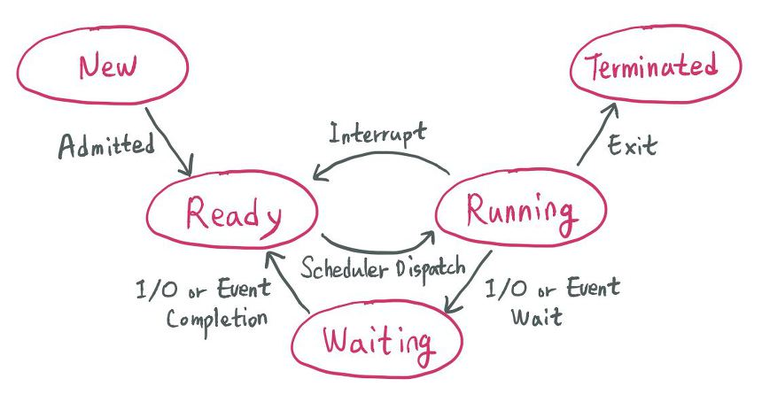
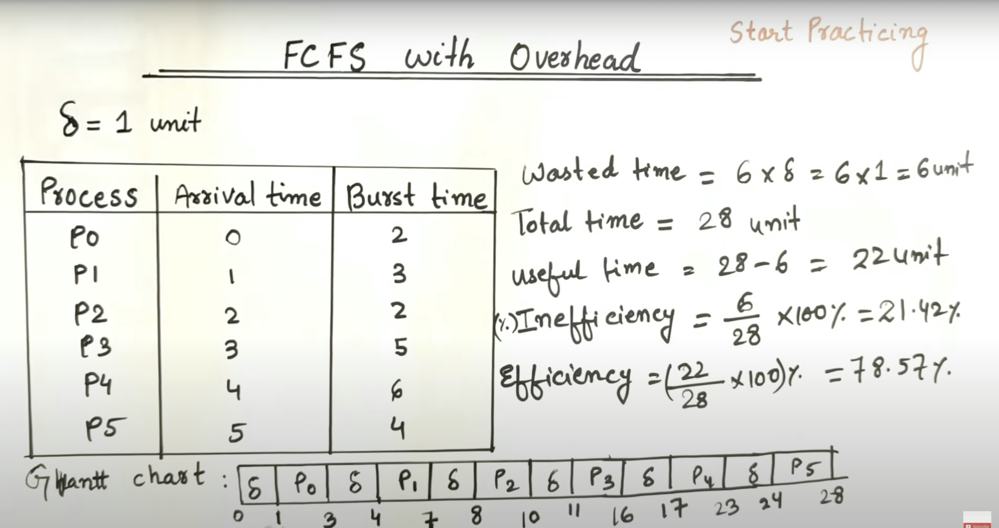
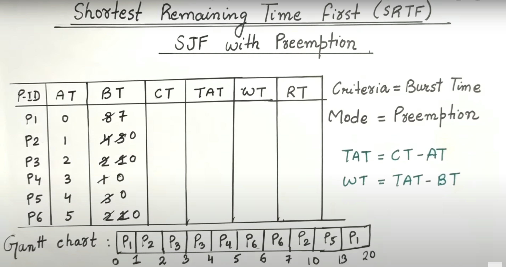
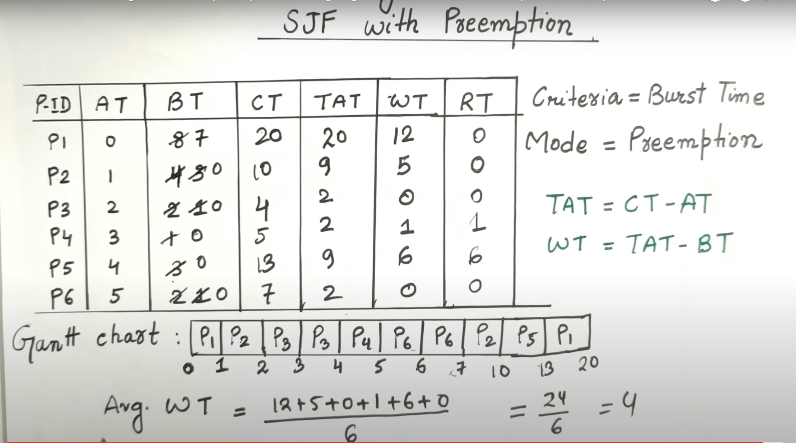
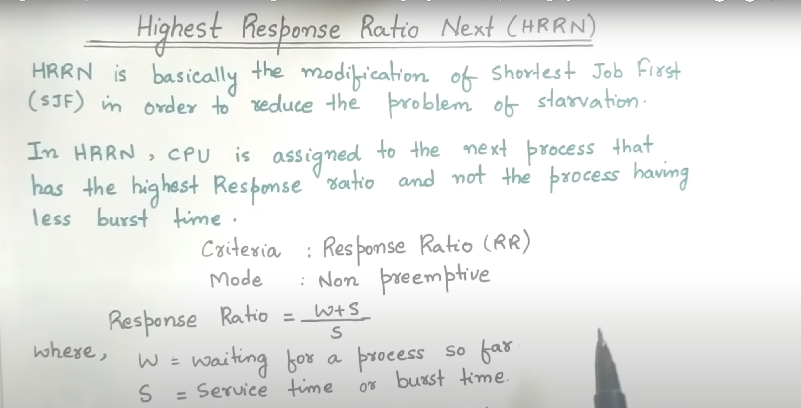
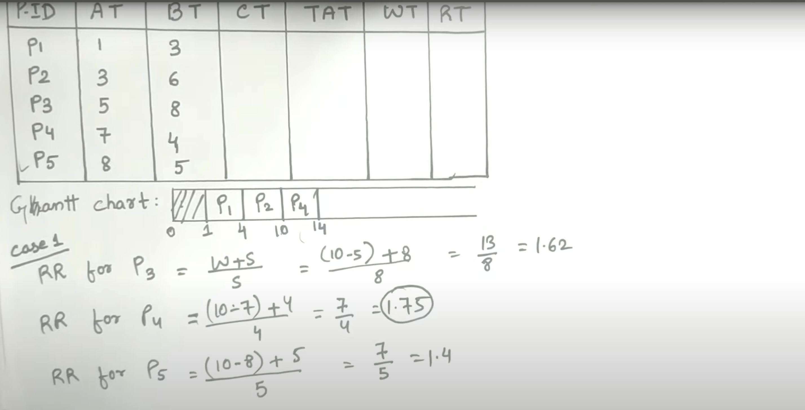
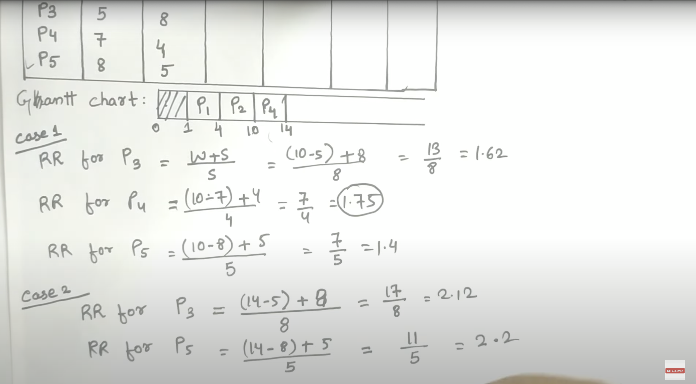
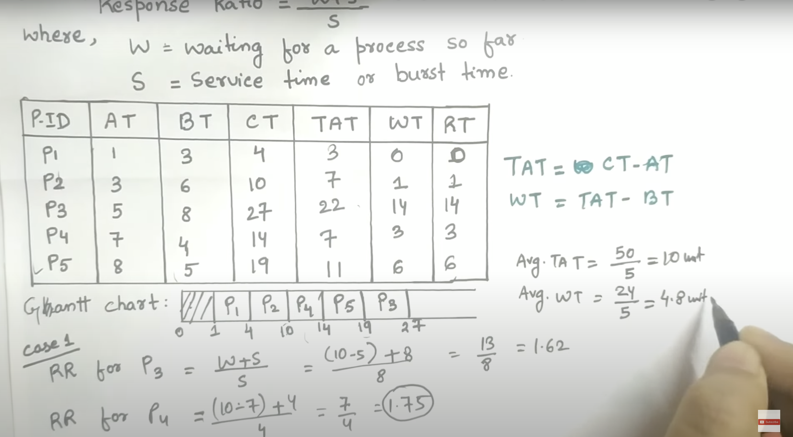

Program
- A program is that which resides on our harddisk
- Like c++ program in .cpp
Process
- A process is nothing but a program in execution
graph LR;
A[Program]
subgraph Code
B[main function]--Compiler-->C[Binary Program]
C--Execution-->D[Process]
end
Single Tasking System(MS DOS)
graph LR;
A[New Program]
B[Memory]
C[Finished/Terminated]
A-->B
B-->C
- In Single Tasking System, only one program can be executed at a time
- When a program is finished, it is terminated and removed from memory
- Then the next program is loaded into memory and executed
- If Process is doing so I/O operation, then CPU is idle and waiting for I/O operation to complete and this is very inefficient and wastage of CPU time
Multi Programming System
- Where multiple processes runs at the same time and CPU is never idle
Multi Tasking System
- Where multiple processes runs at the same time and CPU is never idle and a time slice is given to each process
- A fixed Quantum of time is given to each process and after that time, the process is preempted and another process is given a chance to execute
graph LR;
A[New<br> <br>Stored In<br>HardDisk]--Created-->B[Ready<br><br>Came to RAM]
B--Dispatched-->D[Running]
D--Time Out/High Priority-->B
D--Last Statement <br>Executed / Finished-->E[Finished]
D--I/O Request-->F[Waiting]
F--I/O Completion-->B
Some modifications in above diagram
graph LR;
A[New<br> <br>Stored In<br>HardDisk]--Created-->B[Ready<br><br>Came to RAM]
B--Dispatched-->D[Running]
D--Time Out/High Priority-->B
D--Last Statement <br>Executed / Finished-->E[Finished]
D--I/O Request-->F[Waiting]
F--I/O Completion-->B
F--Suspend-->G[Suspend/Blocked<br> <br>Stored In<br>HardDisk]
G--I/O Completion-->H[Suspend/Ready<br><br>Came to RAM]
G--Resume-->B
B--Suspend-->G

-
5 State Model
-
7 State Model

Process Control Block(PCB)
-
PCB is a data structure maintained by os for every process
-
PCB used for storing the collection about the processes
-
PCB identified by an integer process ID(PID)
-
PCB lies in Kernel Memory space
-
PCB deleted once the process id completed

graph LR;
subgraph PCB
A[Process ID]
B[Process State]
C[CPU Registers]
D[Accounts Information]
E[I/O information]
F[CPU Scheduling Information]
G[Memory Information]
end
- Process ID
- Unique identification for each processes in the operating system
- Process State
- Current state of process wheter process is running ,ready or waiting
- Pointer
- A pointer to parent process
- CPU Registers
- All the CPU registers where the process is stored for execution for example PC,SP,AX,BX,CX,DX etc
- Accounts Information
- Process priority,Process owner,Process ID
- I/O information
- I/O devices allocated to process
- CPU Scheduling Information
- Process priority,Process state,Process ID
- Memory Information
- Code,Data,Stack
Process Scheduler
graph TB;
A[Process Scheduler]
B[Ready Queue]
C[Process Control Block]
D[CPU]
E[Process]
A-->B
B-->C
C-->D
D-->E
- Process Scheduler is a part of operating system which is responsible for selecting the processes from the ready queue and allocating the CPU to one of them
graph TB;
A[Process Scheduler]
B[Long Term Scheduler<br>brings the process from<br>Disk to RAM and<br>makes it ready<br><br><br>decision made by <br> Long Term Scheduler<br>came into action<br>after a long time]
C[Short Term Scheduler <br>brings the process from<br>Ready Queue to CPU<br><br><br>also known as Dispatcher<br>decision made by <br> Short Term Scheduler<br>came into action<br>after a short time]
D[Medium Term Scheduler <br>moves the processes from waiting<br> to suspended state and <br>also from ready state<br> to suspended state<br><br><br>it brings the suspended process<br> from disk to RAM<br>and vice versa<br>used widely in<br>virtual memory]
A-->B
A-->C
A-->D
Queues in OS(Process Scheduling Queues)
graph TB;
A[Job Queue<br>when the process is created<br>it is added to job queue]
B[Ready Queue<br>when the process is ready<br>it is added to ready queue<br>These are in RAM]
C[I/O Queue <br>when the process is waiting<br>for I/O operation<br>it is added to I/O queue]
D[Queues]
D-->A
D-->B
D-->C
Short Term Scheduler and Dispatcher
- Short term scheduler is only responsible for selecting the process from the ready queue and then Dispatcher came in to action
- Dispatcher is responsible for allocating the CPU to the selected process
- Dispatcher is also known as context switcher
- Dispatcher is responsible for saving the context of the current process and loading the context of the selected process
graph TB;
subgraph Ready Queues
1
2
3
4
5
end
A[with the help of short term scheduler<br>using scheduling algorithms<br>one of the process is selected<br>from the ready queue]
B[3<br>PID:3<br>Process State:Running<br>CPU Registers:PC,SP,AX,BX,CX,DX<br>]
3-->B
C[PCB of 3]
C-->B
subgraph CPU
R1[Register 1]
R2[Register 2]
R3[Register 3]
R4[Register 4]
end
B-->R1
B-->R2
B-->R3
B-->R4
R1--saving the response-->B
R2--saving the response-->B
R3--saving the response-->B
R4--saving the response-->B
X[Dispatcher came<br> in to Action]
Y[Short term Schedulers]
Y-->3
X-->B
A-->3
When Short term Scheduler came into action
- A). when some other processes moves from running to waiting.
- B). When some other processes moves from running to ready
- C). When new/existing process moves to ready(priority is higher)
- D). When a process terminates
- Premptive Scheduling in B and C case only
- Preemptive Scheduling is a scheduling in which a process can be preempted from CPU and another process can be allocated to CPU
Various Time Related to the Processes
graph LR;
A[Process]
B[Ready]
C[Run]
D[Complete]
E[Counter]
A--Arrival<br>Time-->B
B--Waiting<br>Time-->C
C--Burst<br>Time-->D
D--Completion<br>Time-->E
- ⭐Arrival Time: Time at which the process arrives in the ready queue.
- ⭐Completion Time: Time at which process completes its execution.
- ⭐Burst Time: Time required by a process for CPU execution.
- ⭐Turn Around Time: Time Difference between completion time and arrival time. Turn Around Time = Completion Time – Arrival Time
- ⭐Waiting Time(W.T): Time Difference between turn around time and burst time. Waiting Time = Turn Around Time – Burst Time
- ⭐Arrival Time=1 ⭐Completion Time=6 ⭐Turn Around Time = 6-1=5 ⭐Burst Time=3 ⭐Waiting Time = 5-3=2
Goals of CPU Scheduling
- ⭐Max CPU Utilization
- ⭐Max Throughput
- ⭐Min Turn Around Time
- ⭐Min Waiting Time
- ⭐Min Response Time
- ⭐Fair CPU Allocation(No starvation)
graph TB;
A[Algorithms]
B[FCFS: First Come First Serve]
C[SJF: Shortest Job First]
D[Priority]
E[Preemptive Shortest Job First]
F[Round Robin]
G[Multi Level Queue Scheduling]
H[Multi Level Feedback Queue Scheduling]
A-->B
A-->C
A-->D
A-->E
A-->F
A-->G
A-->H
FCFS Algorithm
- Criteria : Arrival time
- Mode: Premptive
- First come first serve basis algorithm
| Process | Arrival Time | Burn Time |
|---|---|---|
| P1 | 2 | 6 |
| P2 | 5 | 3 |
| P3 | 1 | 8 |
| P4 | 0 | 3 |
| P5 | 4 | 4 |
- TAT: Turn Around Time = Completion Time - Arrival Time
- TAT = Waiting Time + Burst Time
- RT : Response Time = Time at which process first gets the CPU - Arrival Time
- Gantt Chart
gantt
title FCFS Algorithm Gantt Chart
dateFormat HH:mm
axisFormat %H:%M
Initial milestone : milestone, m1, 00:00, 0m
P4 : 3m
P3 : 8m
P1 : 6m
P5 : 4m
P2 : 3m
Final milestone:milestone, p2
graph LR;
P4[P4<br>start:0<br> end3]
P3[P3<br>start:3<br> end:11]
P1[P1<br>start:11<br> end:17]
P5[P5<br>start:17<br> end:21]
P2[P2<br>start:21<br> end:24]
P4-->P3
P3-->P1
P1-->P5
P5-->P2
| Process | AT | BT | CT | TAT (CT-AT) |
WT (TAT-BT) |
RT (Start-AT) |
Start Time | End Time |
|---|---|---|---|---|---|---|---|---|
| P1 | 2 | 6 | 17 | 15 | 9 | 9 | 11 | 17 |
| P2 | 5 | 3 | 24 | 19 | 16 | 16 | 21 | 24 |
| P3 | 1 | 8 | 11 | 10 | 2 | 2 | 3 | 11 |
| P4 | 0 | 3 | 3 | 3 | 0 | 0 | 0 | 3 |
| P5 | 4 | 4 | 21 | 17 | 13 | 13 | 17 | 21 |
| Average WT = | (9+16+2+0+13)/5=8 |
|---|---|
| Average TAT = | (15+19+10+3+17)/5 =12.8 |
| Advantages of FCFS | |
|---|---|
| Simple and Easy to implement | |
| Non Premptive | Once we assign processor to the process we can not un assign back |
| Convoy Effect | One CPU bound has taken multiple I/O bounds |
| Waiting Time | Comes due to Convoy effect |
| PID | AT | BT | CT | TAT | WT | RT | ST | ET |
|---|---|---|---|---|---|---|---|---|
| P1 | 0 | 40 | 40 | 40 | 0 | - | - | - |
| P2 | 1 | 3 | 43 | 42 | 39 | - | - | - |
| P3 | 1 | 1 | 44 | 43 | 42 Avg=27 |
- | - | - |
gantt
dateFormat HH:mm
axisFormat %H:%M
Initial milestone : milestone, m1, 00:00, 0m
P1: 40m
P2: 3m
P3: 1m
Final milestone : milestone,P3
graph LR;
A[P1<br>ST:0<br>ET:40]
B[P2<br>ST:40<br>ET:43]
C[P3<br>ST:43<br>ET:44]
A-->B-->C
| PID | AT | BT | CT | TAT | WT | RT | ST | ET |
|---|---|---|---|---|---|---|---|---|
| P1 | 1 | 40 | 44 | 43 | 3 | - | - | - |
| P2 | 0 | 3 | 3 | 3 | 0 | - | - | - |
| P3 | 0 | 1 | 4 | 4 | 3 Avg=2 |
- | - | - |
gantt
dateFormat HH:mm
axisFormat %H:%M
Initial milestone : milestone, m1, 00:00, 0m
P2: 3m
P3:1m
P1:40m
Final milestone :milestone, P1
graph LR;
A[P1<br>ST:4<br>ET:44]
B[P2<br>ST:0<br>ET:3]
C[P3<br>ST:3<br>ET:4]
B-->C-->A
graph
A[In both Waiting time is largely differing<br> so this is a huge problem]
FCFS With Overhead
- Taking time for next process 
Shortest Job First(SJF)
- Shortest Job First is a scheduling algorithm in which the process having the shortest burst time is selected for the execution
- Criteria : Burst time
- Mode:Non Premptive
| PID | AT | BT | CT | TAT | WT | RT | ST | ET |
|---|---|---|---|---|---|---|---|---|
| P1 | 2 | 6 | - | - | - | - | - | - |
| P2 | 5 | 2 | - | - | - | - | - | - |
| P3 | 1 | 8 | - | - | - | - | - | - |
| P4 | 0 | 3 | - | - | - | - | - | - |
| P5 | 4 | 4 | - | - | - | - | - | - |
gantt
title Shortest Job First Gantt Chart
dateFormat HH:mm
axisFormat %H:%M
Initial milestone : milestone, m1, 00:00, 0m
P4:3m
P1:6m
P2:2m
P5:4m
P3:8m
Final milestone:milestone,P3
graph LR;
A[P4<br>ST:0<br>ET:3]
B[P1<br>ST:3<br>ET:9]
C[P2<br>ST:9<br>ET:11]
D[P5<br>ST:11<br>ET:15]
E[P3<br>ST:15<br>ET:23]
A-->B-->C-->D-->E
| PID | AT | BT | CT | TAT | WT | RT | ST | ET |
|---|---|---|---|---|---|---|---|---|
| P1 | 2 | 6 | 9 | 7 | 1 | 1 | 3 | 9 |
| P2 | 5 | 2 | 11 | 6 | 4 | 4 | 9 | 11 |
| P3 | 1 | 8 | 23 | 22 | 14 | 14 | 15 | 23 |
| P4 | 0 | 3 | 3 | 3 | 0 | 0 | 0 | 3 |
| P5 | 4 | 4 | 15 | 11 | 7 | 7 | 11 | 15 |
- Avg Waiting time =5.2 and it is lesser
- implemented through mean heap algorithm
- it is greedy algorithm
- TC : O (nlogn)
SRTF(Shortest Remaining Time First ) Algorithm
- Method with Preemption
- Criteria :Burst
- Mode: Premption
- Premption: Means cpu will execute the process to a fixed quantumn time it will not care for process completion
 
gantt
title Shortest Remaining Time First Gantt Chart
dateFormat HH:mm
axisFormat %H:%M
Initial milestone : milestone, m1, 00:00, 0m
P1 :1m
P2:1m
P3:1m
P3:1m
P4:1m
P6:1m
P6:1m
P2:3m
P5:3m
P1:7m
Final milestone : milestone,
Advantages of SRTF
- Minimun Average waiting among all the algorithms
- May cause high waiting and high response times for CPU bound jobs
- I mpractical
Priority Scheduling
Priority Scheduling (Non Preemptive)
| PID | Arrival Time | Priority Value | Burn Time |
|---|---|---|---|
| P0 | 0 | 5 | 3 |
| P1 | 1 | 3 | 5 |
| P2 | 2 | 15 | 8 |
| P3 | 3 | 12 | 6 |
| PID | AT | PV | BT | TAT | WT | ST | ET |
|---|---|---|---|---|---|---|---|
| P0 | 0 | 5 | 3 | 3 | 0 | 0 | 3 |
| P1 | 1 | 3 | 5 | 21 | 16 | 19 | 22 |
| P2 | 2 | 15 | 8 | 9 | 1 | 5 | 11 |
| P3 | 3 | 12 | 6 | 14 | 8 | 13 | 17 |
gantt
title Priority Scheduling (Non Preemptive) gantt chart
dateFormat HH:mm
axisFormat %H:%M
Initial milestone : milestone, m1, 00:00, 0m
P0:5m
P2:8m
P3:6m
P1:5m
Priority Scheduling (Preemptive)
| PID | Arrival Time | Priority Value | Burn Time |
|---|---|---|---|
| P0 | 0 | 5 | 3 |
| P1 | 1 | 3 | 5 |
| P2 | 2 | 15 | 8 |
| P3 | 3 | 12 | 6 |
| PID | AT | PV | BT | TAT | WT | ST | ET |
|---|---|---|---|---|---|---|---|
| P0 | 0 | 5 | 3 | 17 | 14 | 0 | 17 |
| P1 | 1 | 3 | 5 | 21 | 16 | 17 | 22 |
| P2 | 2 | 15 | 8 | 8 | 0 | 2 | 10 |
| P3 | 3 | 12 | 6 | 13 | 7 | 10 | 15 |
gantt
title Priority Scheduling (Non Preemptive) gantt chart
dateFormat HH:mm
axisFormat %H:%M
Initial milestone : milestone, m1, 00:00, 0m
P0:2m
P2:8m
P3:6m
P0:1m
P1:5m
- Starving of Low Priority in Priority Scheduling
- Solution: Aging
Round Robin Scheduling
- Uses time Quantum
- Circular Queue(ready queue)
- Average waiting time can be higher but response time is good
- Sensitive to quantumn
- smaller quantum time: context switch overhaed
- large quantum : become FCFS
| PID Time Quantum=2 |
AT | BT |
|---|---|---|
| P0 | 0 | 3 |
| P1 | 1 | 1 |
| P2 | 1 | 5 |
graph LR;
A[P0<br>0-2]
B[P1<br>2-3]
C[P2<br>3-5]
D[P0<br>5-6]
E[P2<br>6-9]
A-->B-->C-->D-->E
Highest Response Rate Next (HRRN)



